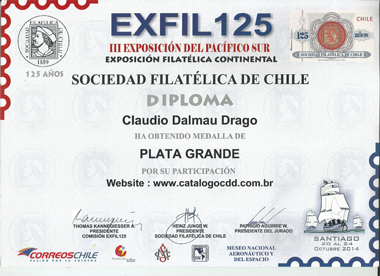

|
|
Our Awarded Members and Their Sites
Many PWO members were awarded high prices by prestigious philatelic worldwide or local organizations. We have the pleasure to congratulate the winners, to list their names and the awards won, and to thank them for their activity. Please notice that the PWO site is one of the sites that were awarded in the past by the FIP.
2014 - Cláudio D. Drago, Chile
The "EXFIL125" was a Continental Philatelic Exhibition that celebrated the 125
years of Sociedad Philatelic of CHILE and the III-rd Exhibit of the South Pacific,
held from 10 to 24, 2014 October.
The CATALOGOCDD is a free access catalog available on the internet,
containing all Brazilian emissions and was admitted in the EXFIL125 electronic
literature class, being awarded by the big silver medal.
The catalog is presented in Portuguese, English, French and Italian and is
available here (as recorded on the PWO Members List).

| Awards of the International Philatelic Federation (FIP), August 2002 |
|
| Results of the 2002 FIP Philatelic Web Site Evaluation, PhilaKorea, Seoul |
-
Best Web Site Official Class
The Canadian Postal Archives http://www.collectionscanada.gc.ca/postal-archives/080608_e.html
Author: Cimon Morin, from Canada -
3 - Star Site
Clube Filatélico do Brasil (URL changed)
Author: Henrique Cruz, from Brazil -
3 - Star Site
Italian Center for Resistance Philately http://www.cifr.it/
Author: Fabio Vaccarezza, from Italy -
3 - Star Site
The Philatelic Webmasters Organization http://www.pwmo.org/
Author: Victor Manta, from Switzerland -
3 - Star Site
Plate Number Coil Collectors Club (PNC3) http://www.pnc3.org/
Author: Ronald Maifeld, from USA -
3 - Star Site
Romania, as shown by its Stamps http://www.marci-postale.com/
Author: Victor Manta, from Switzerland -
3 - Star Site
Texas Precancel Club (URL changed)
Author: John Foster, from USA -
2 - Star Site
ANJEF - Associação Nacional de Jornalistas e Escritores (URL changed)
Author: Hernâni Matos, from Portugal -
2 - Star Site
History on Stamps (URL changed)
Author: Bjorn Bakken, from Norway
French Academy Internet Award 2001 - 2002
The site Bureaux français de l'empire ottoman (French postal offices in the Ottoman Empire) of our member Mr. Robert Désert was awarded the Academy Internet Award (Prix Internet de l'Académie) by L'Académie de Philatélie. This award was created in 2001. Mr. Désert is the first philatelist who was awarded this price, in March 2002, counting for the year 2001. We congratulate our club colleague for this prestigious award!
More information can be found on the page: http://robert.desert.chez-alice.fr/
|
Created: 08/14/2002. Revised:
11/4/2019
. Copyright © 2002 - 2019 by PWO and by Victor Manta, Switzerland. All rights reserved worldwide. |